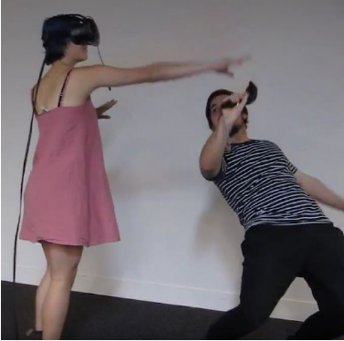
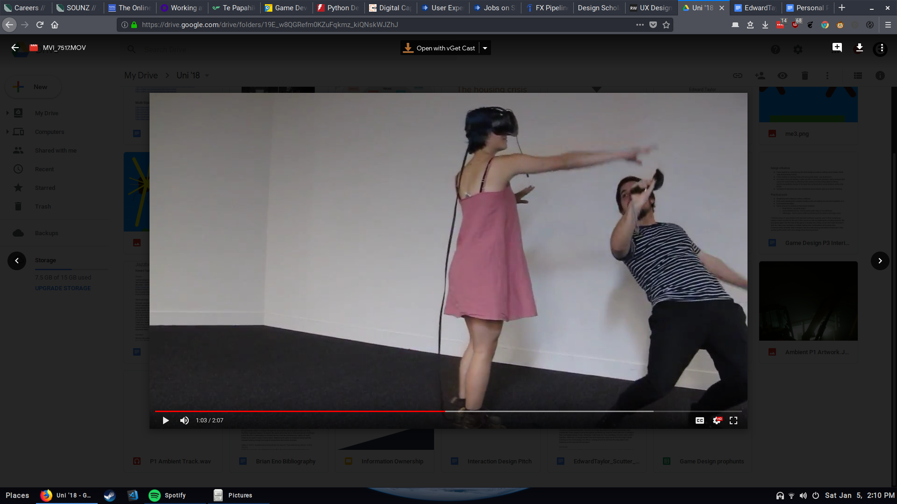
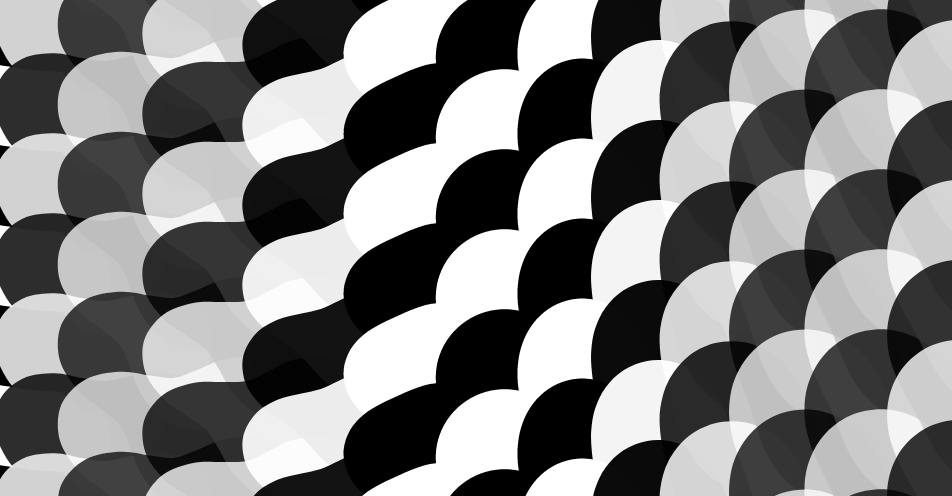
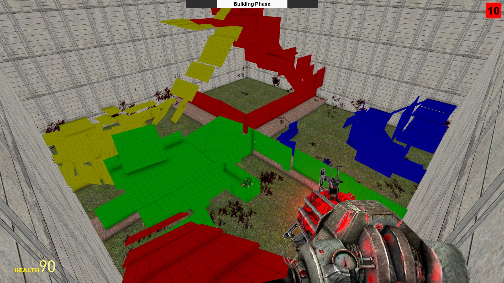

Portfolio Edward Taylor
Interaction & Technology Design
I am a Developer and Interaction Designer based in Wellington. I research and use technology to design interactions that delight the user, then apply modern development tools to achieve the project goals. I enjoy working with emerging technologies with different design methods to solve complex problems that time to understand and experiment with. I work best when I care about what I’m doing and for the people that I’m doing it for. I highly value being able to interact with and learn from users and co-workers through research, interviews and testing to explore different perspectives. My dream job would push me to glean new understandings of how people operate, work collaboratively and use creative ideas and output something that brings good into the world.
Much of my work has code available on github, linked in the project titles.
I was awarded a summer scholarship working with Victoria University and the Blind Foundation on an app (skill) for Amazon’s Alexa voice interface system. I worked collaboratively with PhD researcher and lecturer Gillian McCarthy to create a skill (app) that provided something of value to blind users. We went through many cycles of research, scoping and testing throughout the project. Our first cycle involved me exploring the technology by making an experimental adventure multiplayer game using the alexa platform. This really helped me understand the restrictions in user speech interpretation, balancing machine interpretation accuracy and ease of user interaction.
After this experimentation, we took what I had learnt and what Gillian already knew into user interviews. We wanted to find out what we could do to actually have an impact in their lives, given the limitations of the technology. We explored topics of community, transport, identity, technology (existing understanding, expectations), fun, social issues for visually impaired people. It was important that we asked these questions in neutral ways that removed our own bias and expectations from the interview; to not affect their response. This way, we get a full picture of what they think instead of a reaction to what we said.
Of the directions scoped out after doing user research, one focussed on transport, another on learning alexa and yet another on accessing blind foundation information. Because of technology and the values the interviewees expressed, we went the route of developing an event discovery system that hooked into eventfinda.co.nz. I use their api to generate the voice model data which allows us to interpret real locations and venues around New Zealand. The biggest focus once the core interaction was finished was making the slope of difficulty through tutorialisation perfect so that users of all skill levels felt supported without holding back or confusing others. It is a balancing act, not an optimisation problem, which requires creativity, testing, conversations and experimentation.
I was finally contracted another 20 hours to add polish before submitting it to Amazon, wherein we had a final meeting and test with some Blind Foundation staff then used the feedback to focus on making it express the information afforded by eventfinda in the most eloquent way - something that had been put on the backburner until then, along with the normal bugfixes. This involved using flow charts to think about the integration of the correct grammar for dates and ranges into the code then following the Amazon certification process until it was finally accepted into the store!
For my final paper at Victoria University I carried out independent research with course coordinator Walter Langelaar. I worked on a modification of the game Minecraft that provides accessible translation technology built into the multiplayer text communication.
It uses an existing translation technology that can translate english and dutch text into standardised images used by special needs kids who cannot communicate through other means, called Pictographs or PCS. In classrooms, these pictographs are normally in the form of a categorised book with images they point at to communicate more complex ideas to others or their helper. I have a friend who works in one such classroom where he uses Minecraft to teach kids social skills such as sharing, collaboration and communication in an environment where they are comfortable and happy to explore and experiment.
I implemented a modification of Minecraft that directly places this translation technology into the existing multiplayer messaging, allowing these non-verbal users to have some level of communication with other players. The technology isn’t always perfect, but even being able to transfer some kind of information like “I want to build a house on a hill” could be incredibly useful in learning self confidence and communication skills. I hope to get it used in the classroom in the future to test out its real world efficacy and get useful feedback.

For my game design course I wanted to do a multiplayer VR game. What I made can be described best as blind man’s bluff mediated through VR. Up to two controller players without headsets move around the room guided by vibrations in the controllers, becoming higher frequency and stronger the closer they get to their goal. They are trying to get as many points as possible before they are caught by the VR player. The VR player is inside a room in outer space where there are props floating around organically - the player is trying to figure out what props are controlled actually the other players.
I put minimal effort into the visuals of the work, using creative commons props etc, in order to focus on the interaction between people in reality and how I could manipulate the different gameplay elements to tease out fun for different players:
- Tweaking how non-player props move to balance how easy it is to detect the other players
- Experimenting with sound to distract from the real world audio of players running around that could give them unfair advantages
- Requiring the player to actually grab the controller and hold a trigger to capture a controller player to get them to use more limbs instead of just requiring them to look at the prop - an interaction that would be less interesting for Controller players and audience members alike
- Testing the vibrations and applying different functions such as exponential vibrations to make sure that you can figure out discernible information whether close or far from your goal
- Designing the vibrations to encourage moving the controllers around in a way that the VR player could notice, resulting in the controller players coming up with inventive ways to confuse them.
- Displaying a camera and score information on a screen for people just watching or waiting to play that lets them get involved in what is happening
- Thinking about how people playing the game, bending and sneaking around, could be entertaining and sometimes interactive for people, similar to watching sports games. In my experiments I often found random people in the room would laugh seeing a controller player (me in the picture) barely avoiding the VR player, which would then cause the VR player to spin around trying to catch the controller, knowing the audience has seen something they can’t.
I made a Design Document for this game as a part of the class, which can be viewed here. I can also provide the code base on request. I was very happy to get A+ for this project.
I also made another game as a group project in this course which I was less involved in the design process, due to it already being fleshed out before I came on board. I mainly did UI, level design and bugfixes. I made a little dev blog during this course which has some details about both of these projects which you can see here.
Creative Coding Projects (2017/2018)

A collection of my favourite creative coding projects. These are more creative visuals than strict Interaction Design. Most have a menu that you can access in the top left to change settings and views. They all have an “Open” button to open the app in its own tab in the bottom right.
A clock made of clocks that propagates each second from the smallest fractal clocks first.
A standard project visualising emoji pixels with generated glyphs. I experimented with trigonometric interpolation to try get emoji that would interpolate smoothly, with varying results. Settings menu available and select drive to set the colour manually.
An exploration of emergent and physics-based behaviour in visuals. Particles are pushed away by the mouse. Settings available to change physics weights. Try changing the settings so that atoms of particles can’t hold together or try pushing atoms off the edge.
Using emergent behaviour (smiling, laughing in response to physics) to emulate personality (humor, love) in technology. Click to randomize.
The landscape which you first come across is a minimal visualisation of 4D perlin noise. 2D left and right, another dimension for the hills in the back and yet another over time. Clicking will randomise your frame in time. Settings can be used to mirror the view and to change to the wallpaper, also triggered with the space key. The wallpaper (blobs) has a lot of influence from the colour waves project, but uses the continual nature of the visualisation to move between different internal frequencies (multi-pronged blobs). I use the existence of the black background, overlapping shapes and transparent colours to allow a great variety of views to have mesmerising qualities. This combo piece has a focus on being engaging at multiple time/visual scales.
A simple continuation of my idea of generative work at multiple scales. Uses perlin noise at multiple scales to show standardised shapes and movement at one scale and chaos at another. This uses a standard map interface as did the whole class.
I use style transfer and audio frequency analysis to modulate visuals for live music. I try out different style transfer implementations to bring out the qualities I’m looking for and experiment with different frame rates, resolutions and styles that fulfill the goal of doing real-time generation.

At the start of my second year at University of Canterbury studying Computer Science, I worked on a multiplayer game with a friend. It was a round based game with two phases where the players first built defenses for their flag then fought to get their opponents flags. This taught me the basics of cooperative development; using github, having discussions, sharing ideas and making compromises.
A design consideration in this project was making sure that the players could not create impenetrable defenses. Our solution was to have a timed intermediate stage where players prove that it’s possible to capture their flag. I remember we tested different punishments for this, initially redoing the round (not chosen as it punished the innocent players) and not letting them play the round (easy to accidentally happen). We ended up just removing points as it keeps up the arcade pace of the game and doesn’t punish someone badly if they didn’t realise what they had to do.
I also learnt about the importance of having well-structured code, user testing (with friends) and designing for people breaking the system. I had lots of fun working with my friend on this and was really happy to have a bit of a community around it during the peak, some users running custom servers, gaining almost 4k views on the workshop page, over 2k downloads and 182 ratings for an average of 4 stars. The only negative of this project was dealing with Lua and GMod’s fiddly networking code.
Multiplayer Audio Songmaker App (2016)
After 2 years of Computer Science I wanted something more creative, human centric and personally interesting than the algorithms, compilers and discrete mathematics I had been learning. I took a break from study and got a job doing freelance Android development for a client wanting to create an MVP of collaborative music making app. I enjoyed having a lot of freedom in interface decisions - thinking about what we were trying to get the user to do in any given frame and how the high-level pages of the interface should flow together.
One thing I learnt from this experience was that having multiple ways to get to the same endpoint isn’t a bad thing; my imagined best route of interaction isn’t necessarily what will come to mind for others and if we can allow for different ways to have the same result, we can support different people and mindsets. For example, a user should be able to first select their friends and settings before starting to record or be able to start recording straight away. If we structure the interface in a way that allows diversity of interaction without obfuscating existing methods, we are able to reduce frustrations.
I also was able to have fun with little generative visual elements like waveforms and got to experiment with alternate feedback methods like vibration and audio to tell the user when to start recording. Unfortunately I do not have visuals of this project as it was internal for a client and has not been publicly released.